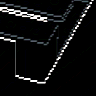

C50의 같은 known support 정답에서 원 crop 정답→common crop 오답으로 바뀐 항목 중 양수 q 이동이 가장 작은 사례입니다. 성공률 대표 표본이나 q만 바꾼 인과 실험이 아닙니다. q와 L이 함께 달라졌고 C51은 SAM prompt도 다를 수 있습니다. 원 fullRGB 재읽기·새 crop sampling·모델 호출·새 라벨은 없습니다.
같은 BEFORE 영상의 두 저장 crop |RGB 차이| ×8, 255에서 포화. 모델 입력이 아닙니다.
